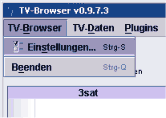
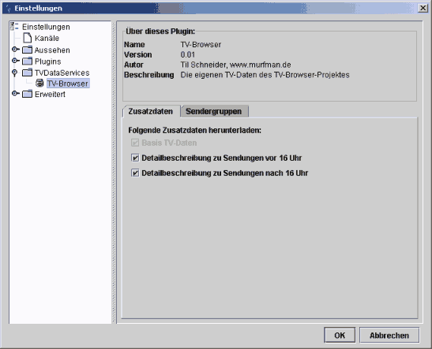

TV-Browser bietet zahlreiche Einstellungsmöglichkeiten. Die wichtigsten sollen hier erklärt werden.

Drücken Sie die Tastenkombination Strg-S oder wählen Sie Einstellungen aus dem Menü TV-Browser um den Einstellungen-Dialog zu öffnen.
Selektieren Sie auf der linken Seite jene Kanäle, die TV-Browser in der Tabelle darstellen soll und klicken Sie anschließend auf den  -Knopf. Die markierten Kanäle stehen dann in der Programmtabelle zur Verfügung.
-Knopf. Die markierten Kanäle stehen dann in der Programmtabelle zur Verfügung.
Wählen Sie Senderliste aktualisieren, um TV-Browser nach neuen Sendern suchen zu lassen (Hierfür ist eine Verbindung zum Internet notwendig).
TV-Browser prüft selbständig regelmäßig auf neue Sender. Verwenden Sie diese Funktion, wenn die Senderliste auf der linken Seite leer ist oder sie vermuten, daß neue Sender verfügbar sind.
Mit dem Knopf Ausgewählte Sender konfigurieren können Sie weitere Einstellungen zu Sendern vornehmen, die Sie auf der rechten Seite selektiert haben.
Die Änderungen, die Sie dann vornehmen, wirken sich nur auf die selektierten Sender aus.
Auf der TV-Browser-Website finden Sie "themepacks" (skins) zum Herunterladen.
Achtung: Die heruntergeladene Datei (.ZIP-Datei) nicht entpacken!
Setzen Sie ein Häkchen vor Skin Look&Feel verwenden und geben Sie Pfad und Dateiname zum heruntergeladenen Themepack an.
Änderungen des Themepacks werden zwar sofort übernommen, trotzdem steht das neue Look&Feel erst mit dem nächsten Programmstart komplett zur Verfügung.
Im Bereich Sendungsanzeige legen Sie fest, wie die Sendungen in der Programmtabelle dargestellt werden sollen.
Manche Plugins sind in der Lage, Symbole unter der Beginnzeit-Angabe von Sendungen zu plazieren. Hier können Sie einstellen, welche Plugins Symbole zeichnen dürfen und in welcher Reihenfolge diese Symbole dargestellt werden.
Der Infotext ist jender Text, der unter dem Sendungstitel steht.
Markieren Sie hier jene Felder, die in der Programmtabelle dargestellt werden sollen und bestimmen Sie die Reihenfolge der Darstellung.
Bitte beachten Sie, daß die Programminformationen die uns zur Verfügung stehen, nicht immer detailiert genug sind, um alle Informatioen anzeigen zu können.
In diesem Abschnitt können Sie die Reihenfolge der Elemente des Kontextmenüs bestimmen. Jeder Eintrag im Kontextmenü entspricht dabei einem der installierten Plugins.
Außerdem legen Sie hier fest, welcher Befehl (d.h. welches Plugin)per Doppelklick auf eine Sendung in der Programmtabelle ausgeführt wird. Selektieren Sie hierfür das gewünschte Element und klicken Sie auf Selektiertes Plugin per Doppelklick ausführen.
Die Liste der verfügbaren Plugins zeigt alle Plugins an, die während des Starts von TV-Browser im Verzeichnis plugins gefunden worden sind.
Sie haben hier die Möglichkeit, einzelne Plugins zu aktivieren bzw. zu deaktivieren.
Aktivierte Plugins können über das Kontextmenü und/oder das Programm-Menü angesprochen werden.
Deaktivierte Plugins scheinen in keinem Menü auf.

Im Karteireiter Zusatzdaten können Sie auswählen, welche zusätzlichen Programmdaten TV-Browser herunterladen soll.Im Karteireiter Sendergruppen können Sie weitere Sendergruppen hinzufügen.